Human Resources Information System
Aku berharap aplikasi ini membantu karyawan mengakses kebutuhan administrasi pekerjaan dalam satu platform digital. untuk memberikan pengalaman yang sederhana dan terstruktur, mulai dari melakukan absensi, melihat data cuti, hingga mengakses slip gaji.
Simplifying everyday employee management
Dalam project ini, saya berfokus pada UX Research dan analisis untuk memahami kebutuhan pengguna dalam mengakses informasi dan aktivitas administrasi karyawan. Proses desain mencakup penyusunan user flow, wireframe, UI design, dan prototyping.
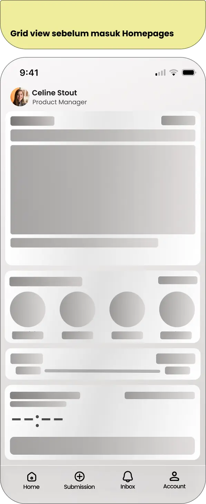
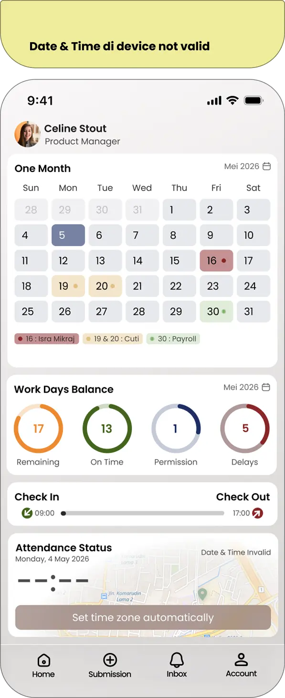
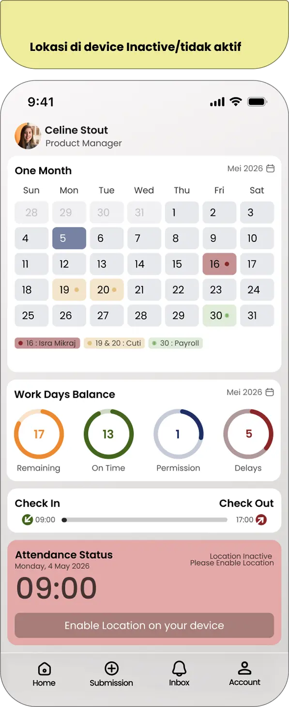
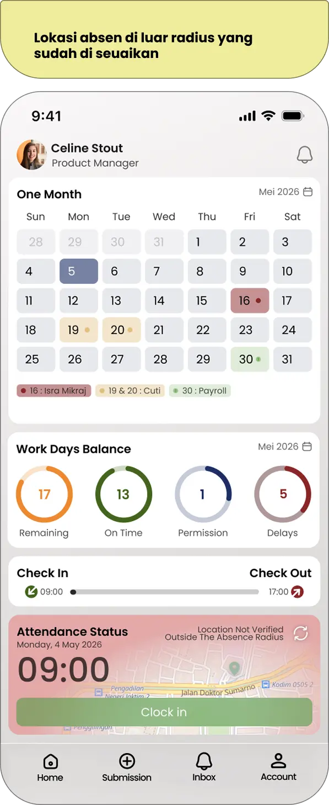
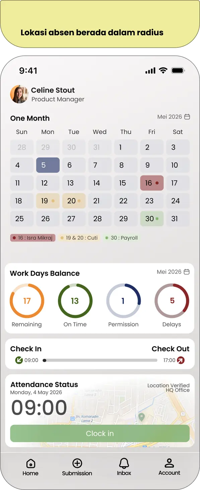
Creating consistency the HRIS experience
Design system digunakan untuk menjaga konsistensi visual dan interaction pattern di seluruh interface HRIS. Typography, color, spacing, dan reusable components disusun untuk menciptakan pengalaman yang terstruktur dan mudah digunakan.
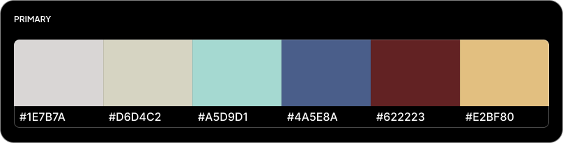
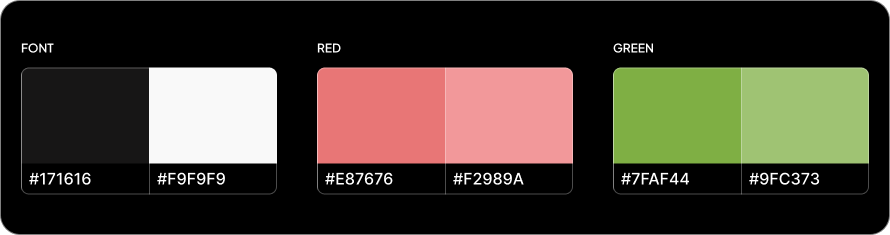
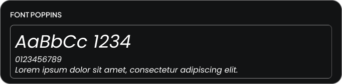
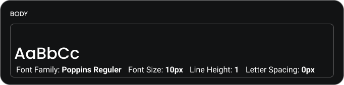
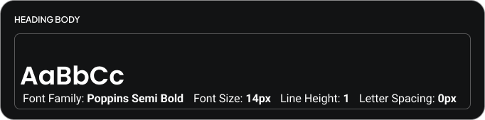
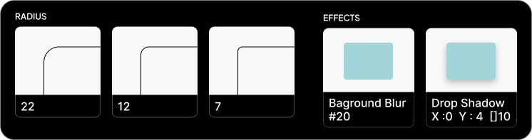
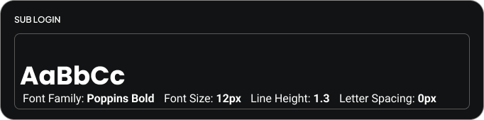
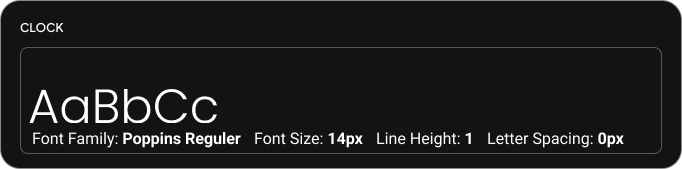
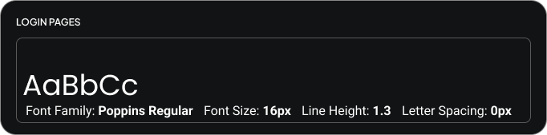
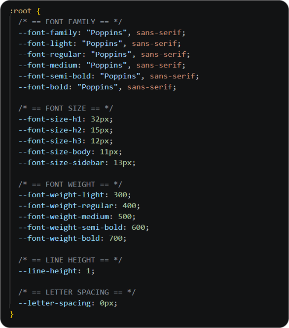
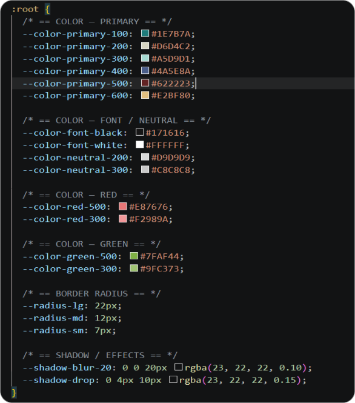
Design system - colors, typography, spacing and visual elements.
Building a scalable interface
Komponen interface dirancang agar dapat digunakan kembali di berbagai bagian sistem. Pendekatan ini membantu menjaga konsistensi sekaligus membuat interface lebih mudah dikembangkan dan dipelihara.

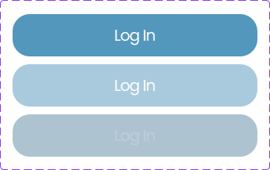


Component library - reusable UI elements for the EMR interface.
Structuring everyday employee tasks
User flow dirancang untuk membuat aktivitas utama karyawan lebih mudah dilakukan dan dipahami. Alur mencakup proses absensi, pengajuan dan pengecekan data cuti, serta akses terhadap informasi slip gaji.


Explore the final experience.
Explore the interactive prototype to experience the HRIS interface, including attendance, leave management, and payslip access.